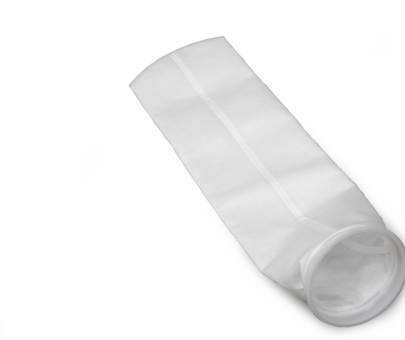
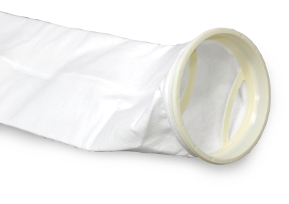
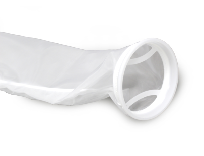

Рукавные фильтры
– однослойные
– многослойные
– с адсорбентом
– тонкая фильтрация
Фильтр-картриджи
– ПОВЕРХНОСТНАЯ ФИЛЬТРАЦИЯ
– ГЛУБИННАЯ
фильтрация
– адсорбирующие
КОРПУСы
– КОРПУСЫ ДЛЯ ЭПФ
– КОРПУСЫ ДЛЯ
РУКАВНЫХ ФИЛЬТРОВ
ФИЛЬТРУЮЩИЕ КАРТОНЫ
адСОРБЕНТЫ
– Диатомит (кизельгур)
– Перлит
– уголь
Однослойные рукавные фильтры

IFAB BPONG
Однослойные рукавные фильтры изготовлены из высококачественного полипропилена и нашли широкое применение в пищевой, лакокрасочной, обрабатывающей промышленности в качестве предфильтров и финишных фильтров благодаря широкому диапазону микронного рейтинга..
Техническая информация:
| Материал | Полиэстер |
| Размеры | Размер 1, 2, 3, 4 и под заказ |
| Микронный рейтинг | 1,0 - 2000 мкм |
| Типы креплений | Polyloc PP и PE, стальное кольцо и специальные кольца |
| Максимальный перепад давления | 1,5 бар |
| Максимальная рабочая температура | 90°C |

Фильтр-сумка BPENG
Однослойные фильтр-сумки изготовлены из высококачественного полиэстера и нашли широкое применение в пищевой, лакокрасочной, обрабатывающей промышленности в качестве предфильтров и финишных фильтров благодаря широкому диапазону микронного рейтинга.
Техническая информация:
| Материал | Полиэстер |
| Размеры | Размер 1, 2, 3, 4 и под заказ |
| Микронный рейтинг | 1,0 - 2000 мкм |
| Типы креплений | Polyloc PP и PE, стальное кольцо и специальные кольца |
| Максимальный перепад давления | 1,5 бар |
| Максимальная рабочая температура | 90°C |

Фильтр-сумка BNMO
Однослойные фильтровальные сумки BNMO изготовлены из полиамида Nylon® и нашли широкое применение в пищевой, лакокрасочной, обрабатывающей промышленности в качестве предфильтров и финишных фильтров благодаря широкому диапазону микронного рейтинга.
Техническая информация:
| Материал | Полиэстер |
| Размеры | Размер 1, 2, 3, 4 и под заказ |
| Микронный рейтинг | 1,0 - 2000 мкм |
| Типы креплений | Polyloc PP и PE, стальное кольцо и специальные кольца |
| Максимальный перепад давления | 1,5 бар |
| Максимальная рабочая температура | 90°C |